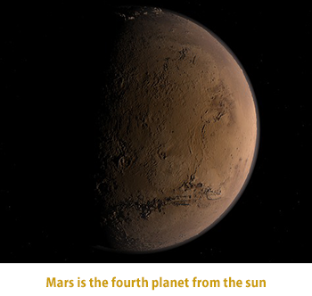

Mars is the fourth planet from the Sun and orbits the Sun at an average distance of about 228 million km (about 141 million mi). Mars is named for the Roman god of war and is sometimes called the red planet because it appears fiery red in Earth’s night sky.
Mars is a relatively small planet, with about half the diameter of Earth and about one-tenth Earth’s mass. The force of gravity on the surface of Mars is about one-third of that on Earth. Mars has twice the diameter and twice the surface gravity of Earth’s Moon. The surface area of Mars is almost exactly the same as the surface area of the dry land on Earth.
